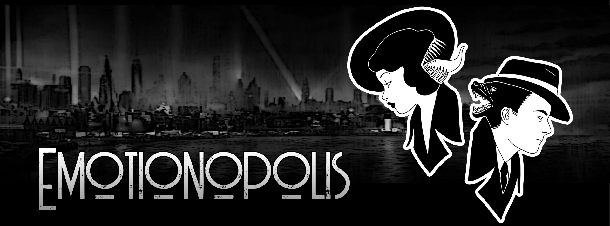

Narrative learning game
Emotionopolis
A mystery in a world where every choice has a visible emotional consequence.

The world
Citizens have two faces: one expressing pleasant emotions and one expressing unpleasant emotions. Players investigate disruptions in the balance between them.
The learning goal
A choose-your-own-adventure structure makes consequences visible while supporting emotional intelligence, self-regulation, empathy, and healthier interpersonal relationships.